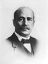

FORMER JUDGES
Judge Joseph G. Jbach
Joseph G. Jbach was born in Huntington County, Indiana on March 15, 1862, the son
Of a lawyer. He attended private school and Huntington High School, then the law
School of DePauw University, where he graduated in 1883. He married Minnie May
Frieldey in 1885, and they had two daughters and a son.
Judge Jbach was elected to the Indiana Appellate Court in 1910 and served from
January 1, 1911 to January 1, 1919. He was Chief Judge for three court terms-
November 1912, November 1915 and November 1917. Following his service on the
Court, Judge Jbach returned to Hammond to practice law.
Judge Jbach served on the Hammond School Board from 1906 to 1910. He founded
a bank in Hammond, was a Mason, and a member of the Presbyterian Church.
Judge Jbach’s wife Minnie died in 1935 and he remained, to Lillian Dimmock. She
And his children survived him when he died on September 7, 1937. Funeral service
Were held at the Hammond Masonic Temple.
Of a lawyer. He attended private school and Huntington High School, then the law
School of DePauw University, where he graduated in 1883. He married Minnie May
Frieldey in 1885, and they had two daughters and a son.
Judge Jbach was elected to the Indiana Appellate Court in 1910 and served from
January 1, 1911 to January 1, 1919. He was Chief Judge for three court terms-
November 1912, November 1915 and November 1917. Following his service on the
Court, Judge Jbach returned to Hammond to practice law.
Judge Jbach served on the Hammond School Board from 1906 to 1910. He founded
a bank in Hammond, was a Mason, and a member of the Presbyterian Church.
Judge Jbach’s wife Minnie died in 1935 and he remained, to Lillian Dimmock. She
And his children survived him when he died on September 7, 1937. Funeral service
Were held at the Hammond Masonic Temple.
